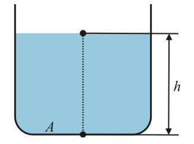
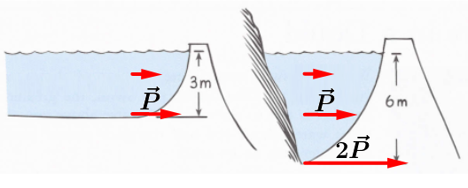
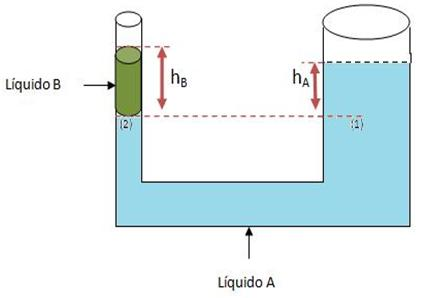

Aula5-34: Teorema de Stevin
Teorema de Stevin

Este teorema afirma que a pressão que um fluido exerce sobre um corpo depende exclusivamente da profundidade (altura) ao qual o corpo encontra-se submerso. A pressão pode ser encontrada aplicando-se a fórmula:
Demonstração:
É consequência deste teorema, portanto, que, num mesmo líquido, dois pontos em igual profundidade, estarão sujeitados a mesma pressão.
Também podemos salientar que pontos em diferentes profundidades estarão sujeitos a pressões diferentes, sendo que o ponto imerso em maior profundidade estará sujeito a uma maior pressão.

Observe a imagem ao lado, perceba que, embora o segundo dique possua menos volume de água, ele ainda assim é capas de exercer maior pressão do que o primeiro dique. Isto decorre da lei de Stevin, que garante que a pressão exercida por um fluido depende não da quantidade de água, e sim da profundidade.
Vasos comunicantes (Uma aplicação importante)

Vasos comunicantes são recipientes hidráulicos de diferentes formatos usados para se estudar a física dos fluidos. Através deles, é possível desentranhar diversas propriedades do sistema estudado, como, por exemplo, densidade e volume de alguma substância.
Para se resolver exercícios envolvendo vasos comunicantes, normalmente, basta identificarmos os parâmetros básicos do sistema (as marcas [altura ou profundidade] dos pontos de encontro das substâncias [ar, liquido A, B, N…], as suas densidades etc) e aplicar o teorema de Stevin para resolver os problemas propostos.